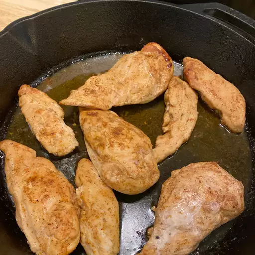

Simple Baked Chicken Breasts

Description
Learn how to bake chicken that's tender, juicy, and perfect every time with this simple,
5-ingredient recipe for boneless, skinless chicken breasts
--Ingredients--
- 4 (5 ounce) skinless, boneless chicken breast halves
- 2 tablespoons olive oil
- 1/2 teaspoon coarse sea salt, or to taste
- 1 pinch Creole seasoning, or more to taste
- 1 tablespoon chicken broth, or more to taste
--Steps--
- Preheat the oven to 400 degrees F (200 degrees C).
- Rub chicken breasts with olive oil and sprinkle both sides with salt and Creole
seasoning. Place chicken in a broiler pan.
- Bake in the preheated oven for 10 minutes. Flip chicken and cook until no longer pink in the center and the juices run clear, about 15 minutes more.
An instant-read thermometer inserted into the center should read at least 165 degrees F (74 degrees C).
- WRemove chicken to a plate.
- Pour chicken broth into the pan and scrape any browned bits off the bottom with a flat-edged wooden spatula.
Add more broth if needed to dislodge the browned bits, but not too much or it will be watery.
- To serve, drizzle the pan sauce over the chicken.